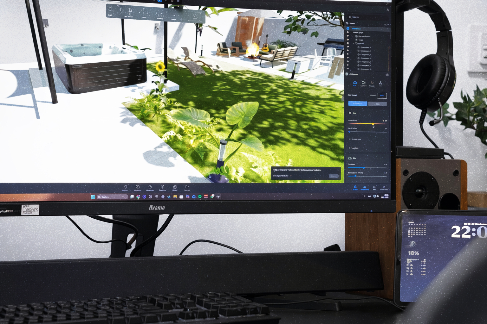

Over ons
HuisVisual brengt bouwplannen tot leven. Wij geloven dat een goed ontwerp pas echt overtuigt als je het kunt zien en voelen. Geen vage schetsen, maar beelden die precies laten zien wat de bedoeling is.
Eerlijk & Direct
Geen gedoe met ingewikkelde contracten. We maken heldere afspraken over wat je krijgt en wanneer het af is.
Oog voor Detail
Van de juiste lichtinval tot de materialen op de muur, wij zorgen dat het klopt tot in de kleinste pixels.
Snel Schakelen
De bouw stopt nooit, dus wij ook niet. Wij zorgen dat u snel verder kunt met uw presentatie.
Benieuwd wat we voor uw project kunnen betekenen?
Neem contact op